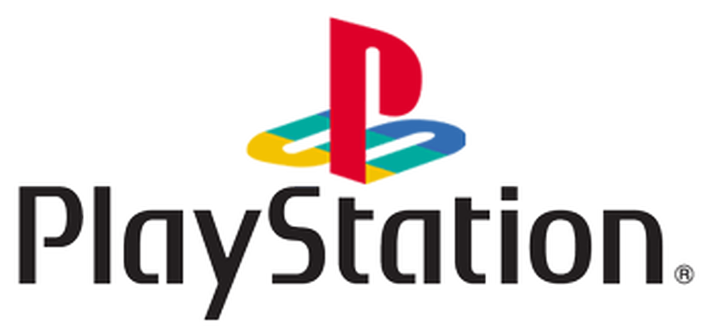

CLICK AQUÍ PARA APRENDER A DESCARGAR PHOTOSHOp CS6
CLICK AQUÍ PARA APRENDER A DESCARGAR SONY VEGAS PRO 17
Como ya he explicado antes en el apartado de Videojuegos, uno de mis intereses/hobbies favoritos son los videojuegos. Normalmente solía jugar en consolas desde que eras niño.Comencé con una Gameboy Advance,continué con la Nintendo Ds, donde descubrí el Super Mario. Después tuve la mítica Wii, donde jugué clásicos como el Wii Sports, Mario galaxy, Mario Kart, etc. Despúes me compré la Nintendo 3ds, y hace 5 años conseguí ahorrar suficiente dinero con mi hermano para la PlayStation4, que apensa habian pasado meses desde su lanzamiento. Hay jugué aun montón de Videojuegos que iba descubriendo, algunos más para mi edad claro. Pero acabé descubriendo una cosa, que los ordenadores, si te hacías uno con la suficiente potencia, podías jugar a un montón de videojuegos. Es cierto que muchas de las consolas actuales tienen Exclusivos (Xbox tiene la saga de Halo y PlayStation tiene la saga de God of War), Pc tiene una gran cantidad y muy amplia de videojuegos. Actualmente ha salido hace nada la nueva PlayStation 5 y la nueva XBOX Series X,que ha sido un Boom Internacional.



Como la mayoría de personas, soy también fan del cine y las series. Mis sagas de peliculas favoritas son clásicos obviamente como Star Wars, El señor de los Anillos, o el MCU(El Universo Cinematográfico de marvel Studios). También de series pongo a destacar de mis favoritas como Juego de Tronos, Breaking Bad, o Rick y Morty. Aunque hay muchas más que me he visto hace poco como The Boys (En Amazon Prime Video) que está bsatnte interesante.


DIXMAX
ESCUCHO normalmente música actual, como Hip Hop(tanto español como extranjero), Trap Latino, etc.
Pero también me da de vez en cuando por escuchar clásicos del
Rock o del Heavy metal.(Queen, Metallica, ACDC, Nirvana, iron Maiden, Guns n' Roses, etc.) Dejo aquí dos playlist mías de Spotify